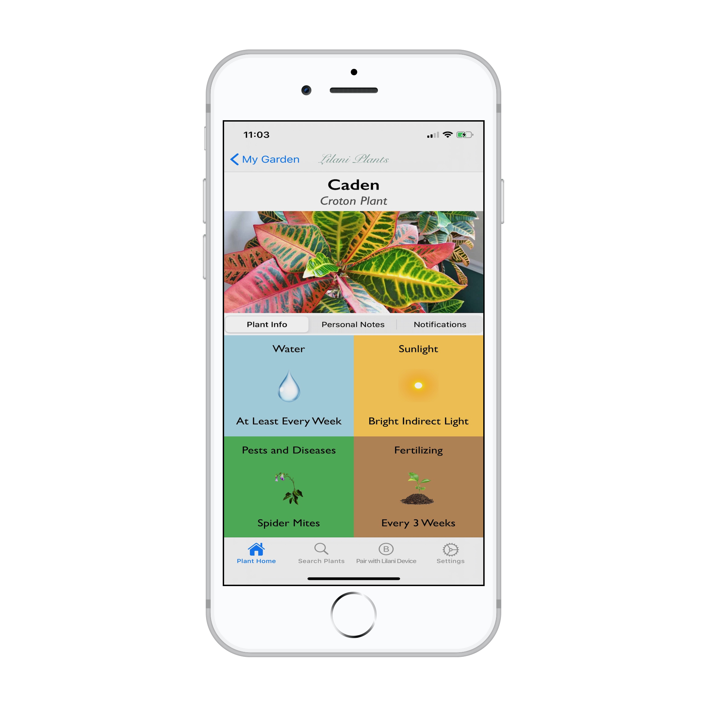
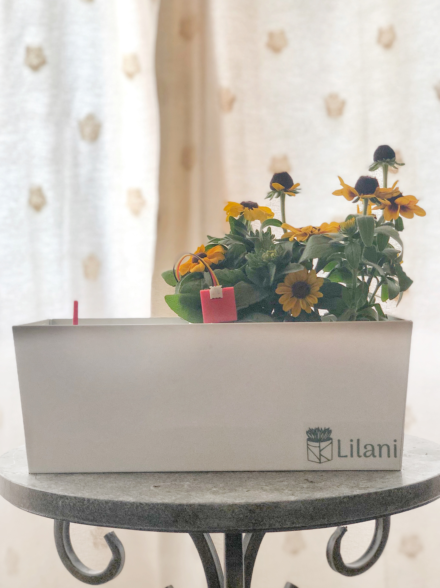

An app-connected indoor self-watering plant pot that takes care of your plants.
So you don't have to worry.
Features
Convenient
Lilani Plant Devices automatically and intelligently water your plants based on soil moisture levels calibrated specifically for your plant through precise bluetooth and database technology (which means that you can sit back, relax, and enjoy the view).

Smart
Connect our Lilani Plant Devices with our iPhone app to track all of your plants at once. We'll also let you set custom notes and notifications and give you plant care tips on sunlight, fertilizing, and pests so that you can be the best plant parent you know.

Eco-Friendly
Lilani Plant Devices save up to 30% more water than a regular planter because of its effective self-watering feature. So not only are you caring for your plants, but you're also doing your part to help the planet. Save water, one planter at a time.
What is Lilani?
Instead of worrying about when to water your plants and whether you have the time, let Lilani's smart self-watering plant devices take care of your plants for you. Our technology can keep your plants watered for up to a month before you need to refill the water tank (which means you'll never have to waste precious time again).
Perfect for the avid traveler or houseplant lover.
But wait, there's more! Use our mobile iPhone app to see which plants you should add to your collection and how to effectively tend to them. You'll also be able to check your plant's soil moisture levels and learn important houseplant tips on sunlight, pests, and more. Just connect to the app, add some soil, and let Lilani take care of the rest!